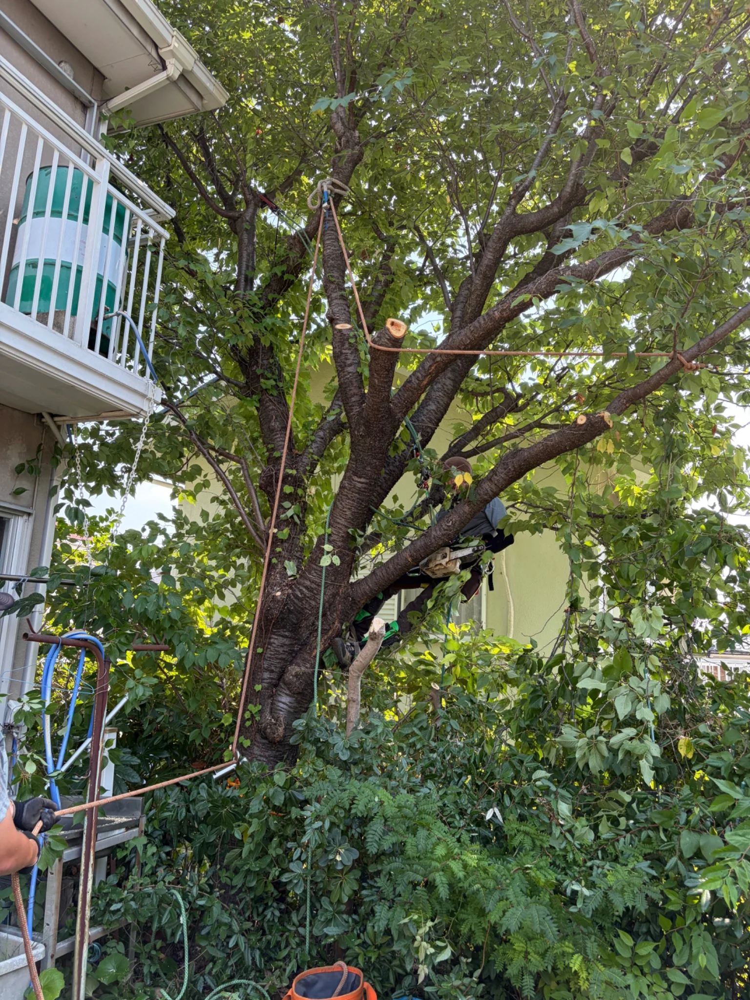
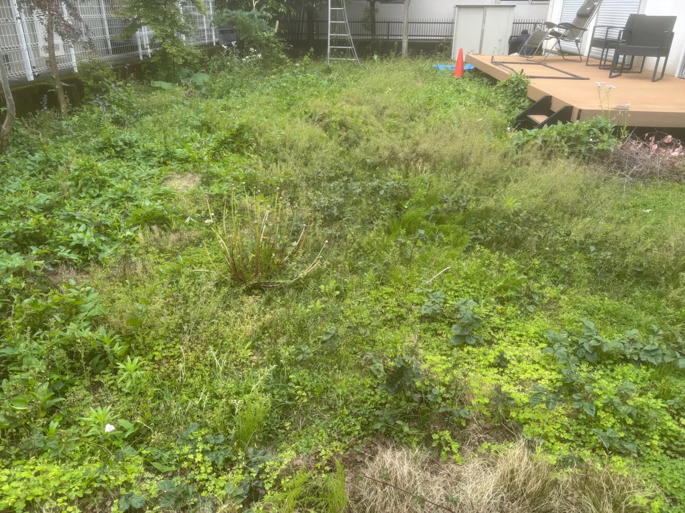
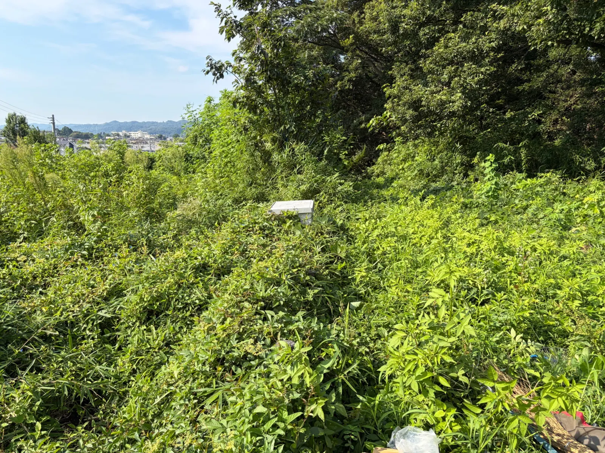
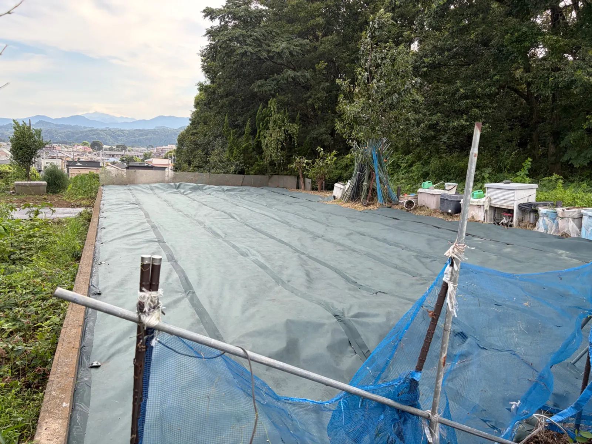
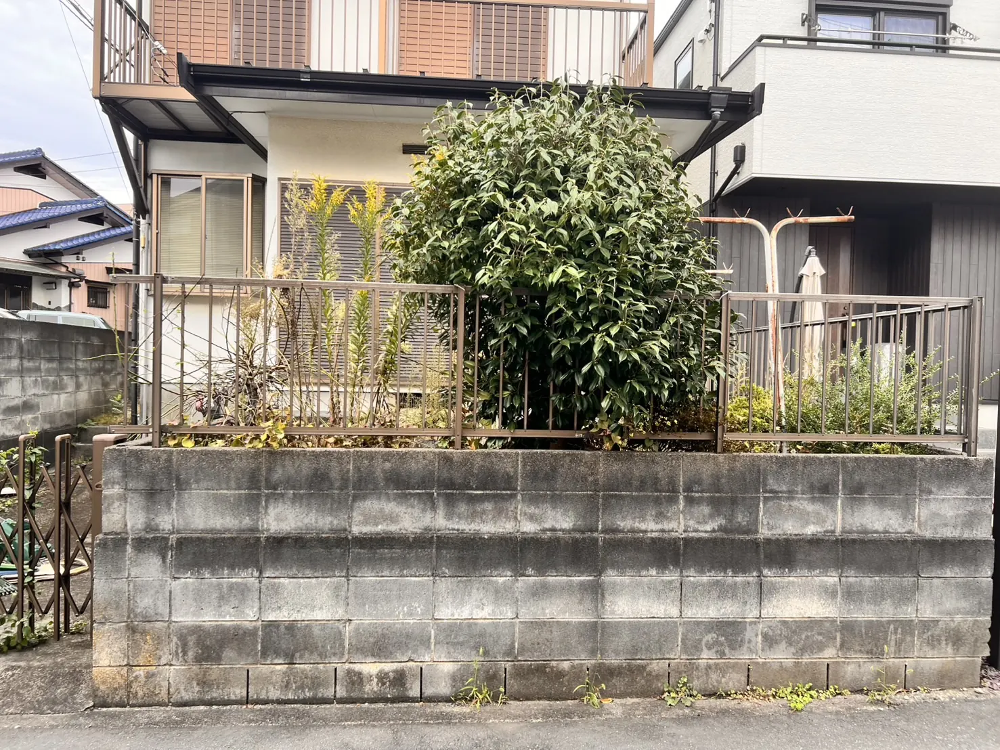
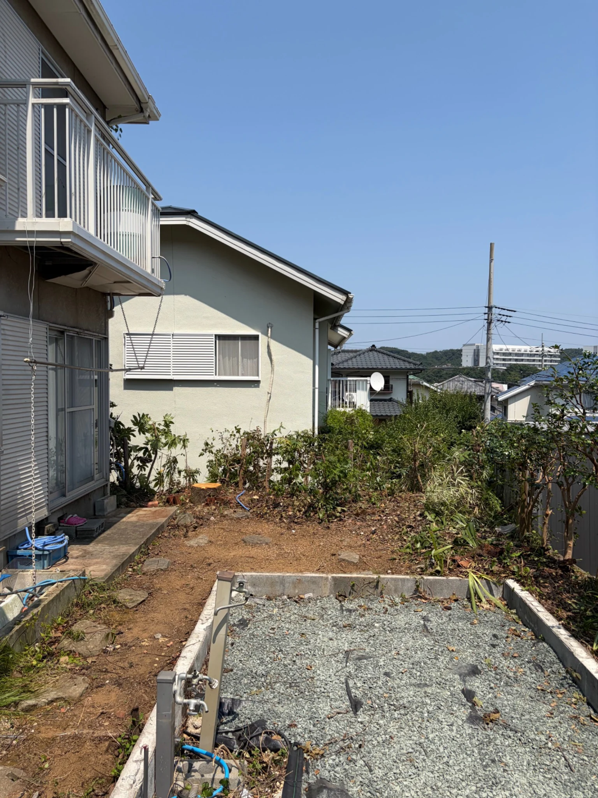

01
草刈り・空き地整理
伸びた雑草の草刈りから、空き地の整理まで。
神奈川県・東京都の植木屋 / WIZ TREE
GREEN CARE, WITH HEART.
草木の管理を、もっと身近に。
庭木一本のお手入れも、店舗・工場・管理物件の定期管理も。
大切な場所の緑に、誠実に向き合います。
草刈り・剪定・伐採・防草対策・年間管理
大切な場所の緑を、長く、気持ちよく。
安心価格を心がけたお見積もりと、丁寧な対応を大切にしています。
現場ごとに、必要な手入れを。



FOR BUSINESS
店舗や施設の緑を、
いつでも気持ちのよい状態に。
商業施設・店舗・工場・不動産管理物件などの草刈りや植栽管理を承ります。定期的な敷地管理を中心に、単発の作業もご相談ください。
法人向け定期管理について詳しく見る庭木が大きくなりすぎた。
草が伸びて困っている。
小さなことだけど頼みたい。
FOR HOME
木一本から、お気軽に。
年齢とともにお庭の手入れが難しくなった、自分では剪定や草刈りができない。そんなお悩みに対応します。小さなご依頼も遠慮なくご相談ください。
お庭のお困りごとを相談するOUR SERVICES
必要な作業を、必要な分だけ。ご状況に合わせてご案内します。
伸びた雑草の草刈りから、空き地の整理まで。
庭木一本のお手入れから、大きくなった木のご相談まで。
草が生えにくい環境づくりをお手伝いします。
緑を美しく維持する管理や、新たな植栽に対応。
店舗・施設から個人のお庭まで、継続的にサポート。
WORKS
草刈り・防草対策・庭木のお手入れなど、実際の施工写真をご紹介します。
配管設備まわりの雑草を整理し、設備の配置に合わせて防草シートを施工。点検しやすい敷地づくりをお手伝いしました。


雑草が広がっていたお庭を整え、防草シートを敷設。お庭の維持管理の負担を減らすための施工事例です。


草が伸びた住宅地の敷地を草刈りし、地面の状態が分かるように整えました。


背丈のある雑草が生い茂った敷地を整理し、広い範囲に防草シートを施工しました。




伸びた草木を整理し、庭木を剪定。植栽まわりの見通しを整えた施工事例です。




住宅に近接した高木の枝おろしを行った施工事例です。ロープを使用した作業中の様子と、作業後の敷地の状態をご紹介します。


※ 施工内容・状況は現場ごとに異なります。掲載写真はお客様のご依頼に応じた作業の一例です。
敷地の管理も、お庭の手入れも。まずはお気軽にご相談ください。
お問い合わせはこちらWHY WIZ TREE
はじめてのご依頼でも、安心してご相談いただけるように。
「こんなことも頼めるかな？」というご相談も大歓迎。お話をじっくり伺い、木一本から丁寧に対応します。
急な草刈りや剪定も、まずはお気軽にご連絡ください。日程や現場の状況に応じて、できる限り柔軟にご案内します。
作業内容や費用をわかりやすくご説明し、ご納得いただいてから施工を進めます。損害保険にも加入しています。
COMPANY / MESSAGE
地域の暮らしと事業を支える、身近な植木屋でありたい。
SERVICE AREA
相模原市・町田市をはじめ、神奈川県・東京都を中心に。
神奈川県は相模原市・厚木市・海老名市・座間市・大和市、東京都は町田市・八王子市などを中心に、草刈り・庭木の剪定・伐採・防草対策・植栽管理を承ります。
相模原市で草刈り・剪定をご検討の方はこちら。
店舗・工場・賃貸物件の敷地管理や年間管理をご検討の法人のお客様は、法人向け管理サービスの詳細もご覧ください。エリアや作業内容によって対応可否が異なる場合があります。
作業場所やお困りごとをお知らせください。
必要に応じて現場を確認し、ご希望を伺います。
作業内容と進め方をご案内します。
内容をご確認いただいてから作業を進めます。
FREQUENTLY ASKED QUESTIONS
草刈り・剪定・伐採などのお問い合わせ前にご確認ください。
はい、木一本からご相談いただけます。樹高や周囲の状況によって作業内容が異なるため、まずは現場の状況をお知らせください。
ご相談いただけます。雑草の状態や面積、地面の状況などを確認し、必要な作業をご案内します。
はい。店舗・工場・不動産管理物件などの草刈りや植栽管理に対応しています。法人向け定期管理サービスもご覧ください。
作業場所、希望する内容、庭木や敷地の状況、希望時期をお知らせください。写真があれば、状況の共有がしやすくなります。
CONTACT
法人の定期管理も、個人のお庭も。内容を伺い、丁寧にご案内します。
※ 即日対応は状況によりご相談となります。LINEでの受付は準備中です。